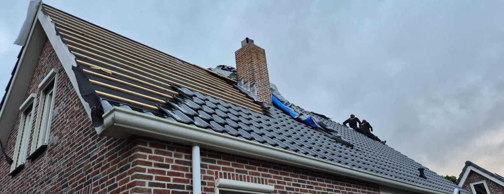
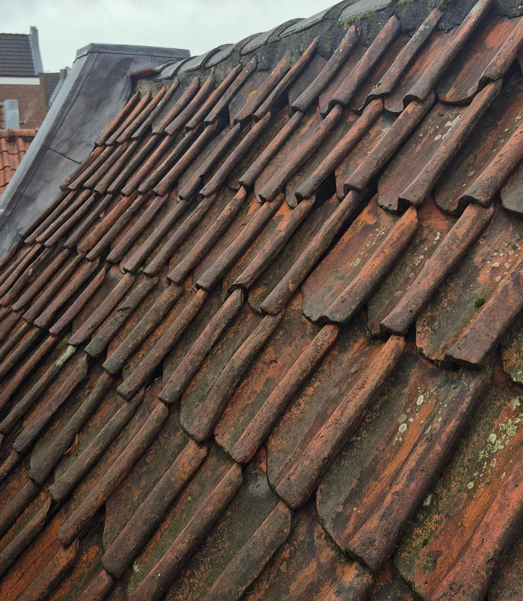
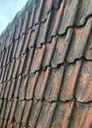

Dakrenovatie
Uw dak beschermd al uw bezittingen, maar ook uw dak is eens aan vervanging toe. Een dakrenovatie, u leest hier alles wat u moet weten!
- ✓Kom direct in contact met één van onze experts en wij helpen u vrijblijvend verder!
- ✓Onze experts staan voor u klaar. Ontvang gratis advies of meer informatie over uw specifieke situatie!
- ✓Heldere inspectie en duidelijke uitleg vooraf

Situaties uit de praktijk
Beelden van dakdetails, slijtage of werkzaamheden die passen bij dit onderwerp.


Wat u moet weten
Het pannendek, de allermooiste en meest voorkomende manier om een hellend dak af te werken. Maar zoals bij alles, komt er een moment dat het tijd is voor een nieuwe. Voor alle informatie over de mogelijkheden wat betreft dakpannen, dat kunt u vinden op onze informatiepagina pannendak .
Het uitvoeren van een dakrenovatie is een kostbare renovatie, maar als het eind van de levensduur van het pannendek is bereikt, dan is er niet aan te ontkomen. Een dakrenovatie kan ook overwogen worden om uw woning of object een nieuwe, frisse look te geven.
Wanneer uw pannendak zijn levensduur bereikt is afhankelijk van het type dakpannen en uiteraard de belasting. Een dak wat meer belast wordt door weer en wind zal immers eerder aan renovatie toe zijn, dan een dak wat minder belast wordt. Een dakrenovatie is gemiddeld nodig, in het geval van betonpannen na 50 jaar, bij keramische dakpannen is een dakrenovatie na ongeveer 100 jaar nodig.
Een versleten pannendek, wanneer is een pannendek nou echt versleten? Het pannendek is versleten wanneer de dakpannen poreus raken. Dakpannen hebben poriën, bij keramische dakpannen (klei), zijn de poriën kleiner doordat het basisproduct een hogere dichtheid heeft, bij betonpannen zijn de poriën groter.
Wanneer de dakpannen poreus worden gaan de poriën openstaan en de dakpannen gaan water vasthouden. Een poreus pannendek is te herkennen aan mossen en algen, die op het pannendek aanwezig zijn. Ook afbrekende delen, kunnen wijzen op een versleten en poreus pannendek.
Kosten dakrenovatie
De kosten voor een dakrenovatie zijn van zoveel factoren afhankelijk en kunnen door het type dakpannen, wel of niet isoleren, bereikbaarheid, oppervlakte van het dak etc. etc. enorm uiteenlopen. We vertellen u graag, wat de kosten zouden zijn in uw situatie.
Kom direct in contact met één van onze experts en wij helpen u vrijblijvend verder!
Advies of meer informatie nodig?
Onze experts staan voor u klaar. Ontvang gratis advies of meer informatie over uw specifieke situatie!
Wilt u zekerheid over uw dak?
Laat de situatie beoordelen voordat schade groter wordt. U krijgt helder advies over wat nodig is, wat kan wachten en welke oplossing duurzaam is.